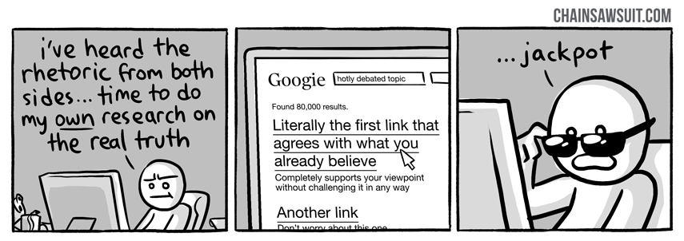
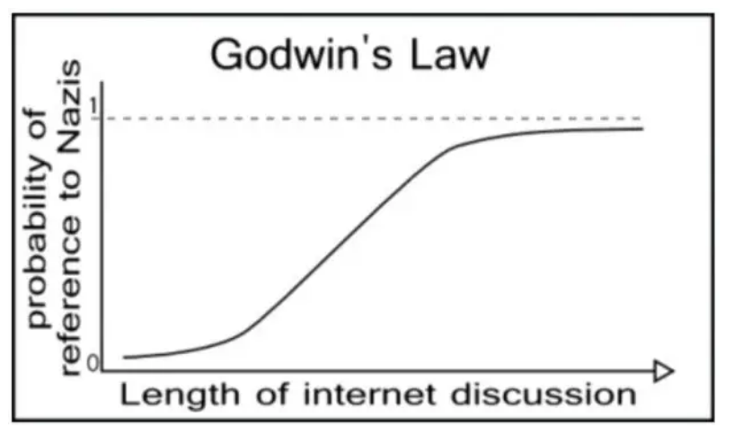
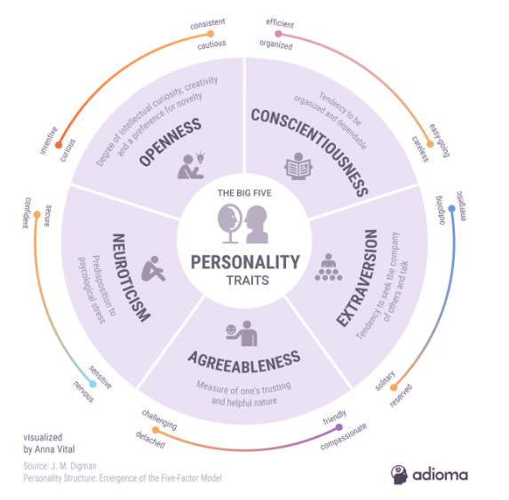
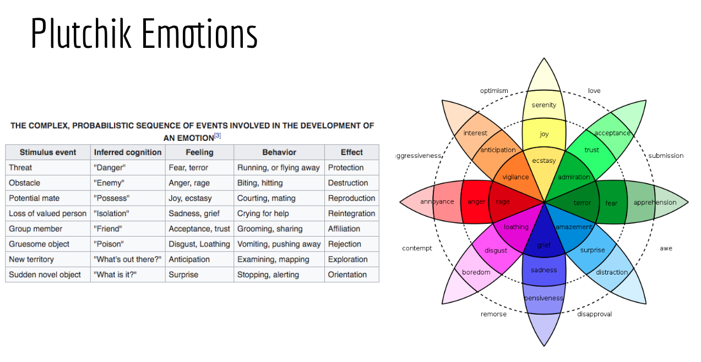
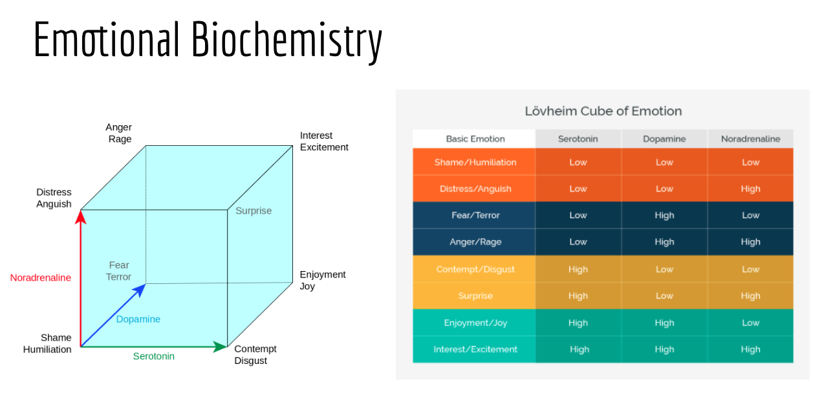
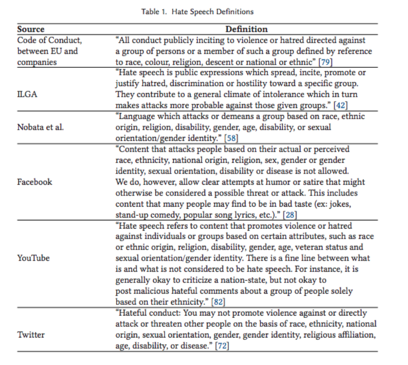

Networking Social Animals, Hijacking Instinctual Drives and Amplifying Cognitive Biases
Aristotle said “Man is by nature a social animal...Society is something that precedes the individual. Anyone who either cannot lead the common life or is so self-sufficient as not to need to... is either a beast or a god. ”
Last week's study of models, game theory and the unexpected emergent properties of complex systems sets the groundwork for this week's study of social networks. We begin the week by exploring graph theory and network theory. Next we refine our model by including key aspects of human behavior--cognitive biases and the emotional aspects of decision-making.
These two pillars--a more nuanced understanding of human behavior and a more complex understanding of how humans form networks with emergent properties--forms our basis for a better understanding of how social networks function. We then apply this understanding to a few examples of real-world social networks.
Much of technology, as Tristan Harris notes in the interview below, is designed to hack our human weaknesses. Our political theories, as Harari points out in that same discussion, are based on an assumption that human behavior is rational (when it's not). Can our current political environment respond appropriately to a world in which humans are easily hacked and social networks create complex emergent systems that can amplify biases and highjack instinctual responses? What are real-world solutions for ensuring that our technology promotes our humanity, not our inhumanity?
Monday:
- Flipped Lecture: Social Networks (21:00)
- Network Theory (an interactive tutorial)
- Analyzing Social Media Data in Python, DataCamp
- (skip already know) Part 1: Basics of Analyzing Twitter Data
- Part 2: Processing Twitter Text
- Part 3: Twitter Networks
- Graph Theory Overview (4:21) Systems Innovations, Apr 2015
- Social Network Analysis Overview (4:44) Systems Innovations, Jul 2014
Wednesday:
- The Biology of Our Best and Worst Selves (15:51) Robert Sapolsky, TED, May 2017
- Unconscious Bias Basics (5:30) Shire Professional, Sep 2015
- Your Lying Mind: The Cognitive Biases Tricking Your Mind, Ben Yagoda, The Atlantic, Sep 2018
- Mr. Rogers and the Power of Persuasion (23:40) Will Schoder, Jun 2017
Friday:
- The Narrative Structure of A Song of Ice and Fire creates a fictional world with realistic measures of social complexity, Thomas Gessey-Jones et. al, PNAS, Nov 2020 (Prof Elkins was a PNAS reviewer on this paper, recommended for those interesting in probability and graph theory)
- The Parable of the Polygon
- Yuval Noah Harari and Tristan Harris talk to Wired, (0:00-25:00) Dec 2018
- Curmudgeon or Captain Cool? This AI Tool Helps HR Know Your Personality from Your Online Footprints, Sriram Sharma, FactorDaily.com, Jan 2018








